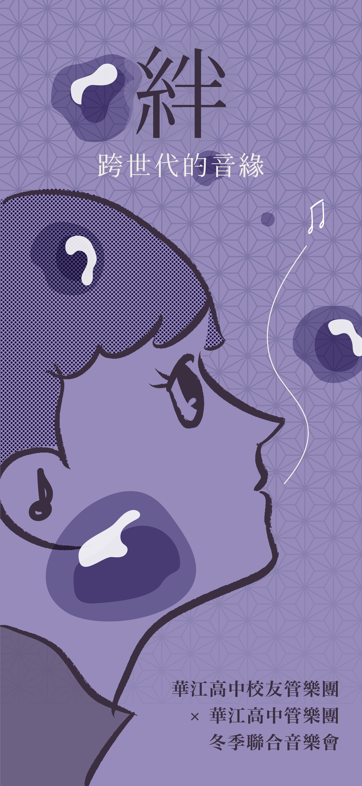
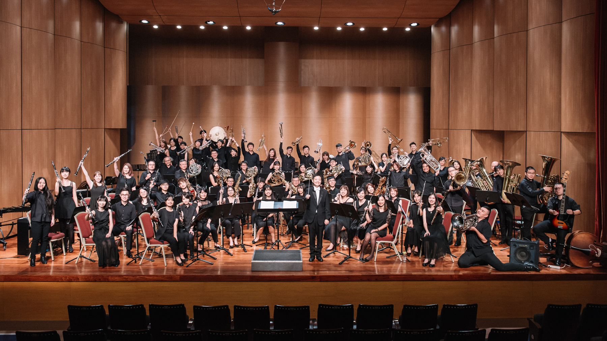
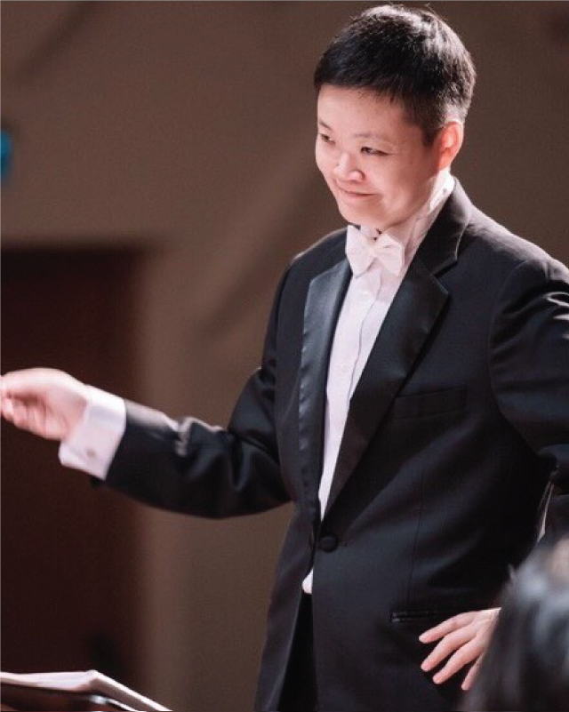

華江高中管樂團是華江高中內的音樂性社團之一，由學生自發組成，以管樂器為主要演奏樂器，包括木管樂器、銅管樂器、低音提琴、打擊樂器等。該團致力於培養學生音樂方面的興趣及專業技能，並經常在學校、社區和其他公共場合進行演出。華江高中管樂團的成員們平時除了上課外，還會進行訓練、練習及排練，以確保團隊演奏的水平和品質。該團樂器齊全，演奏曲目涵蓋廣泛，從古典到現代流行音樂都有涉獵。

高中時期進入北一女中樂隊後開始學習小號，啟蒙於畢學富老師。同時其跟隨畢學富老師學習管樂指揮，並於1992年指揮北一女中管樂團參加台灣省音樂比賽獲高中組省賽特優第一名。
就讀台大期間積極參與各項校內外音樂活動，曾擔任台大管樂團團長、首席小號及交響樂團首席小號。1993年考進幼獅管樂團，1995年於台大藝術季與管樂團合作演出海頓降E大調小號協奏曲，深獲好評。1996年進入台北青年管樂團。期間並曾與幼獅管樂團赴日本及香港等地區參加WASBE國際管樂節之各項活動與演出。
1997年取得美國波士頓大學獎學金，進入其音樂研究所攻讀銅管演奏碩士學位。小號師事波士頓交響樂團首席Roger L. Voisin，器樂指揮師事ALEA總監Theodore Antonio，並隨Atlantic Brass Quintet及Empire Brass Quintet修習室內樂。
1999年5月取得銅管演奏碩士學位歸國，返國後即投入管樂教學迄今。
現已取得教育部大學講師證書。曾任教台東大學音樂教育學系五年，多次協演國家交響樂團(NSO) 、台北市立交響樂團(TSO) 、台北愛樂交響樂團(TPO) 、台北縣交響樂團、台北世紀交響樂團、台灣管樂團、幻響管樂團。現任教於台北市立古亭國小音樂班、並擔任天主教輔仁大學管樂團指揮、桃園市大崗國中管弦樂團指揮、板橋後埔國小音樂班管弦樂團指揮。同時定期指導台灣大學管樂團、建國中學校友管樂團。並擔任天使之翼交響管樂團團長、台北青年管樂團團員。
Music by 酒井格
日本當代作曲家酒井格出生於大阪，自幼展現優異的音樂才華。《七夕》完成於 1988 年，是其高中時期脫穎而出的成名之作，其抒情性與畫面感使其成為近代管樂作品中最常被演奏的經典之一。
作品取材自日本七夕傳說。當時正值升學時期的酒井格因無法全程參與社團活動，遂將對合奏時光與社團夥伴的思念寄託於牛郎織女一年一會的故事，使浪漫傳說多了一層青春友誼的溫度。
中段慢板由薩克斯風與上低音號擔綱獨奏，不僅展現兩種樂器溫潤的音色，更源自一段校園軼事：據傳作曲者的兩位摯友（甚至被視為情侶）恰好演奏此二樂器，酒井格遂以此編制留念。全曲以木管如星光般的細碎音型開展，終至溫暖而光輝的高潮。
在時間流動與季節更替之間，《七夕》以最質樸的語彙訴說青春的牽繫，也讓這份真摯的音緣在多年後依然持續共鳴。
Music by 吉俣良
Arranged by 後藤洋
本曲改編自 2008 年 NHK 大河劇《篤姬》的主題音樂，原作自宮尾登美子的同名小說。該劇由宮崎葵主演，以播出時僅 22 歲的年紀創下大河劇史上最年輕主演紀錄，並於播出期間獲得高度評價。
樂曲描繪江戶幕府第十三代將軍德川家定正室－篤姬（天璋院）的一生。她自故鄉薩摩（今鹿兒島縣）遠赴江戶（今東京都），在幕末動盪與政治交錯之間承擔家族責任。篤姬的生涯既溫柔又堅定，是女性於時代巨流中所展現的力量象徵。
吉俣良亦出身鹿兒島，使作品多了一份與主角同鄉者特有的視角。經後藤洋編曲，高貴的旋律線條與透明和聲相互交織，呈現篤姬內斂的情感與身分所附帶的期許。短短數分鐘的音樂濃縮歷史劇的情緒厚度，也留下跨越時代的情感牽繫。
Music by EGustav Holst
Arranged by 伊藤康英
古斯塔夫・霍爾斯特（Gustav Holst）因《行星組曲》而廣為人知，但在管樂領域中，《First Suite in E-flat for Military Band》（1909）則具有里程碑般的重要地位。十九世紀的作品多以歌劇、舞曲或管弦樂作品改編為主，編制與音響皆受限制，而本作品採用管樂為原生媒材創作，標誌管樂逐漸建立自身語法與音響特質的起點，被視為近代管樂曲庫發展的關鍵作品之一。
組曲共分三個樂章，霍爾斯特在總譜中註明需不間斷演奏。第一樂章〈夏康舞曲〉以主題加多段變奏構成，音色與節奏逐步累積張力；第二樂章〈間奏曲〉以速度與性格的對比形塑結構；第三樂章〈進行曲〉則以明亮的旋律與節奏輪廓凸顯管樂的管色特性，形成開放而鮮明的收束。
值得一提的是，本曲自誕生以來版本眾多，手稿版、出版社版與改訂版等累計多達六種以上。2010 年伊藤康英出版「原典版」，讓演奏者得以更貼近 1909 年手稿的音響與配器思維。
Music by 酒井格
本曲是酒井格於 2021 年應日本陸上自衛隊第 14 音樂隊之邀，為該團所在「四國」地區量身打造的作品。酒井格以四國最具象徵性的文化意象—「四國八十八箇所巡禮」為靈感，將朝聖者跨越四縣、尋找自我的旅程轉化為動人的樂章。酒井格將此作構思為「緩—急—緩—急」四個部分，分別對應巡禮路徑中四個地區的宗教象徵：阿波（發心）、土佐（修行）、伊予（菩提）、讚岐（涅槃）。
作品誕生背後亦有一段相當溫暖的緣分。因第 14 音樂隊成員透過酒井格的大學學弟（長號演奏者）傳達邀請，使本作得以誕生。酒井格特別為長號聲部安排充滿莊嚴與厚度的聖詠段落，成為全曲必聽亮點。同時各聲部亦獲得展現空間，使朝聖旅途中多層次的情緒與景致透過管樂的音色獲得具體呈現。
Music by 樽屋雅德
本曲以 1912 年鐵達尼號沉沒事故為背景，視角聚焦於一等航海士威廉‧麥克馬斯特‧默多克。不同於一般以災難本身為焦點的敘事，樽屋雅德將重心置於默多克對家人與責任的情感之上。
據傳默多克在航行期間有每日寫信給家人的習慣。雖然歷史上並無所謂「最後一封信」的史料留存，但樽屋雅德以此為創作契機，想像若默多克能在最後時刻寄出書信，其中會包含何種思念、祈願與不捨。作品並非重現災難，而是透過聲響剖析人性、責任與深情。尾段旋律收束於寂靜與餘韻之中，彷彿未曾寄出的信件在百年後以另一種形式回到我們面前。
Arranged by 三浦秀秋
由吾峠呼世晴創作的《鬼滅之刃》因結合熱血戰鬥與深刻親情，在全球掀起文化現象。少年竈門炭治郎為拯救變成鬼的妹妹禰豆子而加入「鬼殺隊」，故事中家族、意志與夥伴之間的連結，使作品超越漫畫領域，成為跨世代的文化符號。
本組曲由三浦秀秋改編，選取四首代表性樂曲—《紅蓮華》、《from the edge》、《炭治郎之歌》、《炎》。改編保留原作幻想與熱度，使層次豐富的旋律在線條清晰的吹奏語法中重現。各聲部猶如並肩作戰的角色般交織，使作品跨越媒材，以管樂的形式延續其情感能量。
Music by Ayase
宮川成治
作為雙人音樂團體 YOASOBI 的出道曲，《夜に駆ける》以「將小說音樂化」為核心概念，改編自星野舞夜投稿於 monogatary.com的短篇小說《桑納托斯的誘惑》。作品以數位音樂世代特有的節奏與語感建立敘事，旋律之下隱含關於牽繫、生死與選擇的層次，使其在日本乃至全球獲得高度共鳴。
宮川成治的管樂改編將原作的電子質地與疾馳感拆解為多層次的吹奏音色，將節奏線條與旋律段落轉化為具有物理能量的聲響。失去歌詞後，原先由語言承擔的敘事功能改由配器、動態與呼吸支撐，使作品在舞台上呈現出另一種聆聽體驗。
Music by Ayase
郷間幹男
《怪物》為動畫《BEASTARS》第二季片頭曲，作品探討生存本能、階層衝突以及慾望對立等命題。Ayase 在創作中使用電子質地與段落性對比結構描繪角色的內在陰影，使作品具有鮮明的張力與冷冽色彩。
郷間幹男的管樂改編將電子音樂的質地轉譯為原聲器樂的攻擊性與動能，使角色與情緒的衝突透過音色具體化。開頭壓縮的音樂空間與副歌爆裂的能量形成強烈對比，銅管與打擊的介入帶來近似咆哮的推進力，使本曲成為當代流行與吹奏語法融合的代表之一。
Music by Ayase
郷間幹男
若《夜に駆ける》開啟 YOASOBI 的序章，《群青》則是最能跨越世代引發共鳴的作品。歌曲以漫畫《藍色時期》為靈感，描繪追尋理想道路中伴隨的迷惘、挫折與勇氣。作品在日本已超越一般流行歌曲的領域，成為青春與奮鬥的文化符號。2022 年亦被選為春季甲子園入場行進曲（編曲者為《七夕 The Seventh Night Of July》與《巡礼の島》的作曲者酒井格），並在車站成為進站音效，象徵其滲透力與跨界能量。
在管樂版本中，原本依靠歌詞與聲線傳達的情緒由透明和聲與旋律線承接，使情感核心更為凝縮。作品如同一幅聲音畫卷，映照追夢者的青春與執著，也讓聽者在無歌詞的狀態下重新觸碰屬於自己的共鳴。
Music by 岸本亮
高橋宏樹
本組曲精選演奏俱樂部爵士樂的五人樂團 JABBERLOOP 的代表曲《白熊》與《閃電》。JABBERLOOP 自 2007 年出道以來，以高律動、高能量與器樂演奏為特色，於不同領域獲得關注。
高橋宏樹的改編將原本屬於夜色與舞池的爵士質地轉化為具爆發力的吹奏音響。《白熊》因作為棒球節目主題曲而廣為人知，亦成為甲子園應援文化的一部分；而《閃電》則是樂團現場必備的「點火曲」，以快速推進與能量釋放聞名。
在本組曲中，爵士的即興感與吹奏樂的合奏力以自然方式融合，使節奏與音色不斷驅動全場氛圍走向高潮。跨樂種的音樂循環也使本作品成為近年管樂改編領域中極具辨識度的樂曲之一。
短笛
林芷穎
長笛
林芷穎 / 蕭郁慈 / 鍾綺 / 詹恩喆 / 畢馨云 / 莊雅蓉
單簧管
張語庭
豎笛
倪藝芹 / 許菀庭 / 林宜樺 / 尤恬 / 白宗平 / 龔柏榮 / 劉柏言 / 劉宥蘭
低音豎笛
吳小語
高音薩克斯風
李采嫆
中音薩克斯風
高嘉斈 / 林長升 / 陳彥慈
次中音薩克斯風
張婕筠 / 張萓珊 / 羅子淵
上低音薩克斯風
蔡承璋
小號
尤金順 / 黃丹霓 / 廖海茵 / 葉千郁 / 黃律涵 / 楊凱芸 / 陳靖涵
法國號
林威翰 / 張榮富 / 洪鋌峙 / 郭毓菱 / 劉晏辰
長號
劉力宇 / 程以淩 / 陳崧右 / 李曜宇
上低音號
楊舒棋 / 吳祖沂 / 羅澤揚 / 周芮伃
低音號
梁銘鼎 / 王嘉露 / 鄭鎧霖
低音大提琴
謝依伶
打擊
吳怡潔 / 黃彥淑 / 莊于鋅 / 鄭婷勻 / 王敏瑄 / 羅雍南 / 張文耀